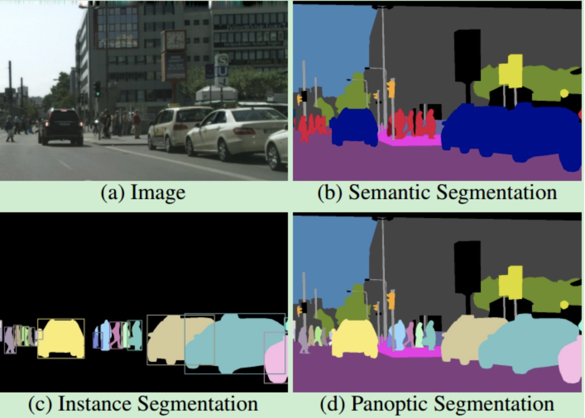

分割简介
分割任务是相对于分类任务稍微复杂一点的存在。之前的分类任务只希望知道整张图像里有什么内容，但是分割任务不仅希望知道图像里有什么， 还要区分出来哪里是什么，这个哪里需要精准到每一个像素。
分割任务分类
根据分割的粒度和对象，分割任务主要可以分为两种不同的类型：
1、语义分割（Semantic Segmentation）：语义分割是将图像分割成不同的区域，并将每个区域分配到相应的语义类别中。 例如，将自然图像分割成天空、道路、树木、车辆等语义类别。
2、实例分割（Instance Segmentation）：实例分割是将图像中的每个对象都分割出来，并将每个对象分配到相应的类别中。 例如，将自然图像中的每个人、车辆、建筑物等分割出来，并分配到相应的类别中。 但实例分割通常不会将天空、水、地面等无法分割出明确实例的区域单独划分出来作为实例进行标注。因为这些区域没有明确的实例对象，无法分配一个唯一的标签给它们。 用英语来说就是这些是不可数的
3、全景分割（Panoptic Segmentation）：它旨在将图像分割成不同的区域，并将每个区域分配到相应的语义类别中，并且对于每个实例， 都应该被分配到相应的类别中。全景分割任务的目标是对整个场景进行像素级别的分割，并对每个像素进行类别和实例标注。
下图展示的是三种分割的区别

大概来说就是语义分割以类别划分，比如车辆都划分到一类，在图中以相同颜色表示。实例分割以单个物体划分，比如不同车辆互相区分，归到不同类别。 全景分割就是既要语义分割把所有物体都划分成类，又要向实例分割一样把其中可区分的人，车等单独分成不同列别。
损失函数-BCE loss
交叉熵损失函数是分割任务中常见的一类损失函数，和之前介绍过的分类任务中使用的交叉熵是一样的，区别在于拓展到二维。 交叉熵损失函数的计算公式如下：
其中，N表示样本数，M表示类别数，y_{ij}表示第i个样本属于第j个类别的真实标签，p_{ij}表示模型对第i个样本属于第j个类别的预测概率。
损失函数-Dice loss
Dice Loss是一种常用的图像分割损失函数，它基于Dice系数（Dice Coefficient）来度量预测结果与真实标签之间的相似度。Dice Loss的优点是可以对小目标进行有效的惩罚，并且可以用于多类别图像分割任务。
Dice系数是一种用于度量两个集合相似度的指标，其计算公式如下：
其中，X和Y分别表示两个集合，\left | X \right | 和\left | Y \right |分别表示两个集合的元素个数， \left | X\bigcap Y \right |表示两个集合的交集元素个数。
Dice系数可以用来衡量模型预测结果和真实标签之间的相似度，越接近1表示预测结果和真实标签越相似。
如果将其修改为Dice loss，需要将上式改为
此处X表示每个像素的预测概率，值为[0,1]之间的浮点数。Y为标签，取值0或者1，代表是否为该类别。
Dice Loss的优点是可以对小目标进行有效的惩罚，并且可以用于多类别图像分割任务。Dice Loss的缺点是在处理高度不平衡的数据集时，可能会出现梯度消失或者梯度爆炸的情况。
语义分割常用数据集
1、PASCAL VOC 2012 1.5k训练图像，1.5k验证图像，20个类别(包含背景)。下载链接
2、MS COCO COCO比VOC更困难。有83k训练图像，41k验证图像，80k测试图像，80个类别。